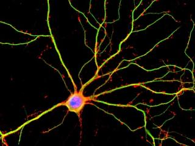
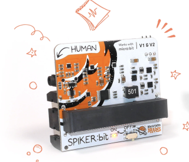
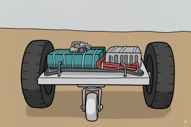
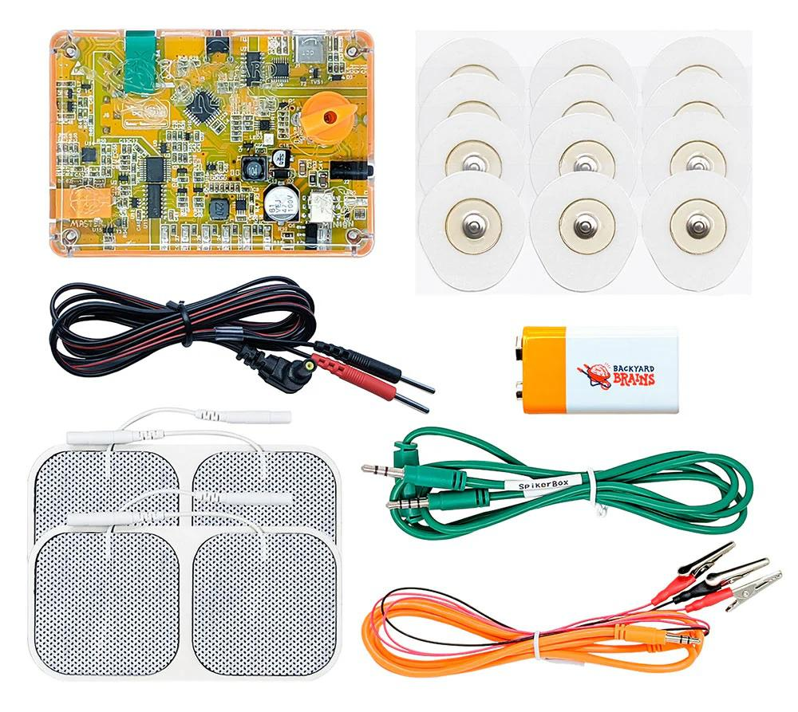
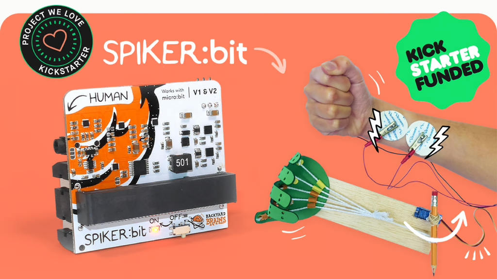

Firmware
I started my firmware programming long time ago (1996) with Microchip PIC16C84.
Now days I am working with STM32, ESP32, MSP430 and ATmega microcontrollers.
For the projects below I used STM32Cube, TouchGFX, Espressif-IDE, VSC, Code Composer Studio, IAR Embedded Workbench,
Arduino IDE etc.
Many of the projects were Apple Mfi certified or IEC 60601 certified for medical electrical equipment.
Skilled in firmware debugging with lab equipment (oscilloscope, logic analyzer, sniffer, etc.).

STM32F4 firmware for electrophys. amplifier
Human-Human Interface.
IEC 60601 certified

ESP32 Educational robot with spiking neural networks

Biological neuron models in firmware

Brain Machine Interfaces. Kickstarter success

Firmware development for BLE controlled cyborg

STM32 firmware for EEG, EKG, EMG device

ATmega firmware for plant el. potentials recordings

MSP430 firmware for muscle EMG recording

ATmega firmware for
ECG & EEG recording device

MSP430 firmware for live neuron recording

ATmega328P firmware for EMG, EKG, EEG recording

Mobile robot platform with iOS control application
STM32 firmware for Spike Station, versatile electrophysiological amplifier

The Spike Station is a versatile electrophysiological recording and stimulation device designed for neuroscience research. It supports the recording of all human electrophysiological signals, including EMG, ECG, EEG, EOG, as well as extracellular neuron recordings with simultaneous current stimulation.
Built around an STM32F4 microcontroller, the device runs on RTOS while using event handlers to ensure precise sampling and timing.
Key Features:
- Records two channels at 42 kHz, ensuring high temporal resolution.
- Variable gain settings ranging from 1 to 15,000, configurable through screen or from the host software.
Programmable Filters:
- Hardware High-Pass Filter adjustable from 0 to 100 Hz, controllable via the host software.
- Software Notch Filter. Implemented in firmware to reduce mains noise (50Hz/60Hz).
Stimulation Capabilities:
- Monophasic and Biphasic Current Stimulation with programmable intensity from 0 to 10 mA.
- Configurable stimulation period, pulse duration, and total duration from 0.1 ms to 9999 s.
User Interface:
- Integrated color touchscreen for direct device control.
- Digital inputs for event markers or external stimulation triggers.
Cross-Platform Compatibility:
- Connects to host application through USB on different platforms: Windows, macOS, Linux, iOS (iAP2 through Lightning port), Android, and Web/Chromebooks.
Audio Control: Integrated sound control functionality.
I developed the complete firmware in C using STM32CubeIDE, ensuring optimized performance and reliability. The firmware is structured to handle precise stimulation timing, signal acquisition and filtering while managing user interface in RTOS and communication through USB.
In addition to firmware I developed and maintained the host application for Windows/macOS/iOS in C++ and Objective-C along with the custom communication protocol for communication with the device.
Human Human Interface - IEC 60601 certified stimulator
The Human-Human Interface (HHI) is a neuroprosthetics education device designed to demonstrate human-to-human control through functional electrical stimulation. It lets one participant (the Controller) use their own muscle signals to trigger electrical stimulation in another participant (the Minion), producing real, visible movement.
Technical Overview
Built around an STM32L433 microcontroller, the HHI combines precision recording and safe stimulation in one compact, IEC 60601–certified unit. Earlier versions relied on our EMG SpikerBox and a third-party TENS device, but the latest HHI integrates everything in-house for higher accuracy and reliability.
Key Features
- Records EMG at 20 kHz sampling rate.
- Performs real-time signal envelope extraction and threshold detection in firmware.
- Generates programmable stimulation trains with precise timing and adjustable intensity.
- Streams EMG in real time to host applications on Windows, macOS, Android, and iOS (Lightning/iAP2).
- USB composite connection for data transfer and control.
- Fully designed and tested to meet IEC 60601 medical device safety standards.
- Firmware update through desktop host application.
Applications
Neuroscience outreach and education. Demonstrations of functional electrical stimulation as a bridge for damaged neural pathways. Inspiring entry point into neuroprosthetics research.
Development
For this project I developed the complete firmware in C using STM32CubeIDE, implementing: Real-time EMG acquisition and processing. Signal envelope detection and stimulation control. Communication protocol for streaming and host control. In addition, I programmed and maintained the cross-platform host applications (Windows, macOS, iOS) in C++ and Objective-C, providing a user-friendly interface to visualize EMG activity in real time and configure stimulation parameters.
Impact
The Human-Human Interface experiment has reached global audiences, including a TED presentation with over 20 million views on TED.com and YouTube, and has been sold in the many thousands of devices worldwide, making neuroscience and neuroprosthetics accessible to the public.

Biological neuron models in firmware

Over the years of development at Backyard Brains, we explored various ways to model different aspects of neurons using microcontrollers. During this time, we experimented with numerous spiking neuron models and neural networks.
Some of the models we implemented include:
- Hodgkin-Huxley model
- Morris-Lecar model
- Izhikevich model
- Hybrid models
I developed firmware implementations of these models for ATmega microcontrollers, optimizing them for real time simulation speed. The simulation results are transmitted via USB and visualized in our host application, Spike Recorder. Additionally, neuron models can receive input currents from various sensors, such as light sensors, as well as analog and digital inputs.
All the code is open source and available on Backyard Brains' and my GitHub
Brain Machine Interface Spiker:Bit - Kickstarter success

The Spiker:Bit MakeCode Extension is a TypeScript library that integrates the Backyard Brains Spiker:Bit with the BBC micro:bit in Microsoft’s MakeCode editor. Developed in collaboration between our intern Teruaki Kimishima and me, the library makes it possible to capture and use real-time electrophysiological signals—EEG (brain), EMG (muscle), and ECG (heart)—within a simple, classroom-friendly coding environment.
Key Features
- Cross-signal support: Access brain, muscle, and heart activity with dedicated APIs.
- Real-time analysis: Functions for raw signals, envelopes, heart rate, alpha power, peak detection, and max-value monitoring.
- Buffered signal handling: Retrieve up to 3 seconds of signal history or specify shorter intervals.
- Utility functions: Print signals to serial, or map them directly into interactive projects.
- Block & JavaScript parity: All functions are exposed as drag-and-drop MakeCode blocks and typed JavaScript interfaces.
During hardware involvement I was actively contributing to the design and testing of the electrophysiological amplifiers for EEG, EMG, and ECG, ensuring clean signal acquisition and compatibility with micro:bit.
Spiker:Bit launched via a successful Kickstarter and is now sold by Backyard Brains — the platform and its accessories have been distributed in thousands of units to classrooms and makers worldwide.
STM32 firmware for EEG, EKG, EMG device: Human SpikerBox

Goal of this device was to make device based on STM32 that will record EMG, EKG, EOG, EMG and enable additional functionalities needed for conducting Neuroscience experiments.
Target markets were schools and universities.
Device transmits data through composite USB and it is compatible with:
- Android
- iOS
- Windows
- macOS
- Linux
- Web.
Rare thing about this device was that it supports iAP2 protocol via lightning port for communication with iOS device.
For that purposes we had to:
- get Apple MFi certification
- get approval of product plan from Apple
- pass iAP2/Mfi testing of the device by Apple
I wrote complete firmware and collaborate/consulted in the hardware design and debugging phase. Firmware is written in C using STM32CubeIDE.
Also I wrote iOS in Objective C and Windows/macOS code in C++ that supports communication with this device.
Data stream that is sent from the device to the host app is formatted according to a custom protocol that I made and that enables sending of the embedded messages inside a real time sample stream.
Device needed to have several additional capabilities:
- firmware update capability so I had to implement custom bootloader and implement update of the firmware procedure on the Windows and the macOS app.
- auditory and visual stimulation for Neuroscience experiments
- event triggering that needs to be synchronized with signal within sub millisecond error
- expansion port that enable user to add additional measuring devices like accelerometers etc.

Educational robot - software architect & firmware developer for ESP32

The goal of this project was to make a robot controlled by a computer model of a biological brain. Novel robot enabled students to perform computational neuroscience investigations by designing brains and observing their behavior. The robot is designed to serve as an educational tool for classes focused on Neuroscience and AI.
I have several roles on this project and one of them was to develop firmware for several versions of the robot prototype. First version of the firmware was made for ATMega328 and second version was made for ESP32-CAM board.
Main firmware features:
- real time streaming of HD video over via WiFi using web sockets
- measurement and real time streaming of sensor data (distance, encoders) via WiFi
- parsing and executing commands from host computer
- controlling motors
- controlling RGB LEDs
- generating sounds based on commands received from host computer
- establishing WiFi access point on robot
Additional roles on the project:
- research hardware and propose overall hardware architecture for the first prototype
- research and propose architecture for the first software solution that involved firmware, iOS mobile development, C++ desktop development and C++/MATLAB integration.
This is ongoing project that already received two NIH grants and successfully produced several prototypes. Robot was successfully tested in schools (please see the video below).
Furthermore, comprehensive information regarding the hardware and software can be found in the peer-reviewed paper:
Harris et al., Neurorobotics Workshop for High School Students Promotes Competence and Confidence in Computational Neuroscience
Frontiers in Neurorobotics · Feb 13, 2020
Firmware development for BLE controlled cyborg: RoboRoach
Goal of this project was to update and rewrite firmware for wirelessly controlled movement of a live cockroach by microstimulation of the antenna nerves.
On this project I had to update firmware for BLE TI CC2540 and to rewrite whole firmware for a new hardware platform based on Cypress PSoC 4 BLE (CY8C4247LQI-BL483).
Firmware was written in C an I used PSoC™ Creator IDE and IAR Embedded Workbench.
Beside firmware I was also updating iOS application in Objective C.
This was very unique and fun project! Check out the official product page here.


ATmega32U4 firmware development for recording of plant el. potentials
Goal of this project was to make a device based on ATmega32u4 that will record plant electric signals and send them to main application via USB or audio cable. Also, the device is able to stimulate electrically sensitive plants like Mimosa Pudica and generate plant movement.
Device is called Plant SpikerBox and it was intended to be used in schools and universities.
Device transmits data through CDC USB for Android, Windows, macOS, Linux and Web platforms and through audio cable for iOS devices. Data is sampled and sent in real time at 10ksamples/second.
Particular challenge for this device was to send low frequency <5Hz plant data via audio cable to iOS device. For that purposes we used AM modulation/demodulation of the signal.
I wrote complete firmware and collaborate/consulted in the hardware design and debugging phase. Since the recording of the plant electric potentials is a new topic we had to do a lot of R&D work in order to make reliable device.
Firmware is written in Arduino IDE and it is open source so that students in the schools/universities can modify it.
Also, I wrote Windows/macOS code in C++ and Objective-C code for iOS that supports communication with this device.


MSP430 firmware development for EMG recording: Muscle SpikerBox Pro
Goal of this project was to make a device based on MSP430 that will record EMG signal from human body. Device is intended to be used in schools and universities.
The device transmits data through HID and CDC USB and it is compatible with Android, Windows, macOS, Linux and Web platforms.
I wrote whole firmware on this project and collaborate/consulted in the hardware design and debugging phase. Firmware is written in C in Code Composer and it is open source on GitHub.
First version of this product was using HID packets to transmit real time electrophysiological measurements (40kB/s of samples). HID device class was used to avoid installation of drivers on supported platforms.
Second version of the product was using CDC device class to enable connection to web platform.
For the purpose of this project I made a new custom protocol for data formatting that enabled us to send multiple channels and messages embedded into stream of samples.
Also, I wrote Windows/macOS code in C++ that supports communication with this device.
Device needed to have several additional capabilities:
- firmware update capability so I had to implement update of the firmware procedure on the Windows app.
- auditory and visual stimulation for Neuroscience experiments
- event triggering that needs to be synchronized with signal with sub millisecond error
- expansion port that enable user to add additional measuring devices like accelerometers etc.

ATmega32U4 firmware development for ECG, EEG recording device

Goal of this project was to make a device based on ATmega32u4 that will record ECG (heart) and EEG (brain) signals and send them to main application via USB or audio cable.
Device is called Heart& Brains SpikerBox and it was intended to be used in schools and universities.
Device transmits data through CDC USB for Android, Windows, macOS, Linux and Web platforms and through audio cable for iOS devices. Data is sampled and sent in real time at 10ksamples/second.
Particular challenge for this device was to send low frequency <20Hz EEG data via audio cable to iOS device. For that purposes we used AM modulation/demodulation of the signal.
I wrote complete firmware and collaborate/consulted in the hardware design and debugging phase. Firmware is written in Arduino IDE and it is open source so that students in the schools/universities can modify it.
Also, I wrote Windows/macOS code in C++ and Objective-C code for iOS that supports communication with this device.


MSP430 firmware development for Neuron SpikerBox Pro

Goal of this project was to make a device based on MSP430 that will record living neurons. The device transmits data through HID and CDC USB and it is compatible with Android, Windows, macOS, Linux and Web platforms.
I wrote whole firmware on this project and collaborate/consulted in the hardware design and debugging phase. Firmware is written in C in Code Composer.
First version of this product was using HID packets to transmit real time electrophysiological measurements (40kB/s of samples). HID device class was used to avoid installation of drivers on supported platforms.
Second version of the product was using CDC device class to enable connection to web platform.
Data stream that is sent from device to the host app is formatted according to a custom protocol that I made and that enables sending of the embedded messages inside a real time sample stream.
Also, I wrote Windows/macOS code in C++ that supports communication with this device.
Device needed to have several additional capabilities:
- firmware update capability so I had to implement update of the firmware procedure on the Windows app.
- auditory and visual stimulation for Neuroscience experiments
- event triggering that needs to be synchronized with signal with sub millisecond error
- expansion port that enable user to add additional measuring devices like accelerometers etc.

ATmega328P firmware development for EMG, EKG, EEG recording

Goal of this project was to make Arduino UNO firmware that would record analog EMG, EKG EEG signals from custom made Arduino shields and send it to host application for processing through the USB.
This project is related to several BackyardBrains products: Muscle SpikerShield, Heart and Brain SpikerShield, Muscle SpikerShield Pro etc.
These products were made for educational market (schools and universities).
Most demanding code was for the Muscle SpikerShield that had to do several things in "parallel":
- Sample EMG analog signal at 10kHz
- send 20kB/s of data over CDC USB
- calculate quasi-envelope of the EMG signal in real time
- control servo position for the gripper actuator based on EMG envelope
- control VU meter LEDs
- thresholding signal and control relay
- receive commands from host computer
- format data stream according to custom made protocol that will enable multichannel recordings and bidirectional message passing.
For this project we used Arduino platform to enable the students to easely modify the code.
I wrote all firmware codes for these projects in C using Arduino IDE. For this project I made C++ code that was used on host computer app to connect and communicate with SpikeShield.


Robot platform controlled with iOS application
During and after the COVID lockdown, I built a custom 3-wheel robot platform from scratch using mostly scrap parts, since supply chains were broken at the time. The goal was to create a physical testbed for experimenting with autonomous navigation and control algorithms. I designed and assembled all the hardware, developed the iOS app, and wrote the firmware and backend software.
Key details
- brushless DC motors for wheels
- iOS application communicates with Raspberry Pi Zero W via WiFi
- Python application on the Raspberry Pi runs a Socket server to receive commands from the iOS app
- Arduino handles real-time motor driver control
- I2C communication between Arduino and Raspberry Pi
- Battery pack: LiPo 10s2p
- Power: Mean Well DC/DC supply DDR-240B-24
Although I initially intended to use the platform for testing real-world control algorithms, I later shifted to working with PyBullet physics simulations in Python for faster iteration and easier experimentation.